线性代数¶
1. 向量¶
1.1 向量是什么¶
我们从最基础的向量的概念讲起。向量是线性代数最基本的元素。在不同学科中向量的涵义略微有所不同。
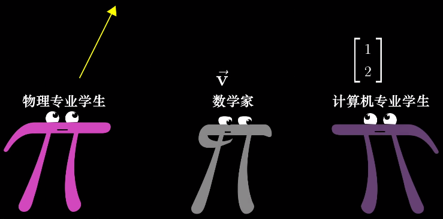物理学中的向量：空间中的箭头，由长度和它所指的方向决定。物理学中的向量可以自由移动，只要长度与方向不变，向量就是同一个。 计算机专业中的向量：有序列表。 数学中的向量：抽象意义上，数学中的向量可以是任意的东西，只要可以对它们进行 加法和数乘 运算即可。这也意味着，加法和数乘是向量最底层的运算。一切复杂和抽象的东西归根结底都源自于这两种运算。这一点贯穿线性代数的始终。但为了方便起见，我们之后还是以直角坐标系中的箭头来理解向量。
和物理学中的向量一样，线性代数中的向量也是有大小和方向的，但必须注意的是：线性代数中的向量不能像物理学中的向量那样随意挪动。线性代数中的向量全部是以原点为起点的向量。
以二维平面直角坐标系为例，线性代数中，向量的坐标由一对数字构成。这一对数字指示了如何从向量的起点（即坐标原点）出发到达向量的终点。第 1 个数字 -2 告诉我们从原点出发沿 x 轴负方向移动 2 个单位的距离，第 2 个数字 3 告诉我们从原点出发沿 y 轴正方向移动 3 个单位的距离，然后我们就能到达向量的终点了。

1.2 向量的运算¶
1.2.1 向量的加法¶
如果将向量看看成是某种形式的运动，那么两个向量相加就是相继执行向量对应的运动。以下图两个向量为例，先沿 x 轴正方向移动 1 + 3 个单位，再沿 y 轴正方向移动 2 + (-1) 个单位，最终的结果就是两个向量相加的结果。这也对应了向量加法的数学形式，即把向量中对应的元素相加。
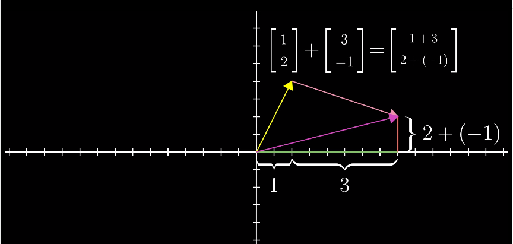1.2.2 向量的数乘¶
向量的数乘运算就是对向量进行缩放，更精确的说是将向量中的各个元素分别进行缩放。例如，乘以2相当于将这个向量拉长为原来的两倍，乘以1/3相当于将这个向量缩短为原来的1/3。乘以-1相当于将这个向量调转方向。这个拉伸、压缩以及反向的过程就称为“缩放”。这里的2、1/3、-1或任何用于缩放的数值，称为“标量” scalar。
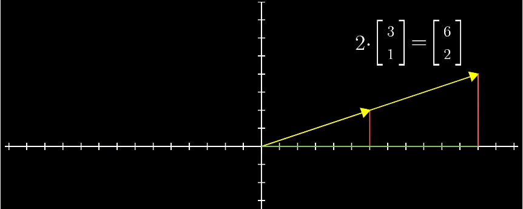2. 线性组合、张成的空间与基¶
2.1 线性组合¶
以二维平面直角坐标系为例，i, j 分别是沿 2 个坐标轴方向的单位向量。那么，坐标平面上的任意一个向量，都可以看作是 i 和 j （称为基向量）的缩放再相加的结果。基向量缩放的倍数对应向量的各个分量，即向量对应的坐标。

一组基向量就对应一个坐标系，选择不同的基向量就构造出了不同的坐标系。 同一个向量，在不同的坐标系下（即采用不同的基向量），其坐标值也要相应地发生变化。
这一“将向量进行缩放再相加”的操作，即 线性组合。
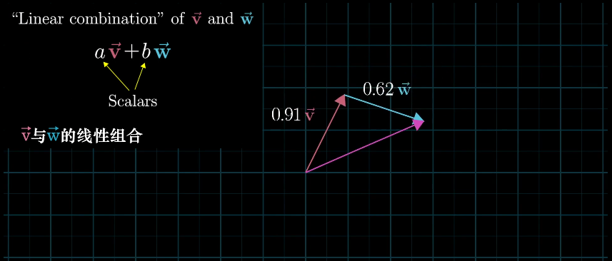2.2 向量张成的空间¶
在二维平面中，选取 2 个向量，然后考虑它们所有可能的线性组合，我们会得到什么呢？这取决于我们选择的 2 个向量。
通常情况下，我们会得到整个平面：
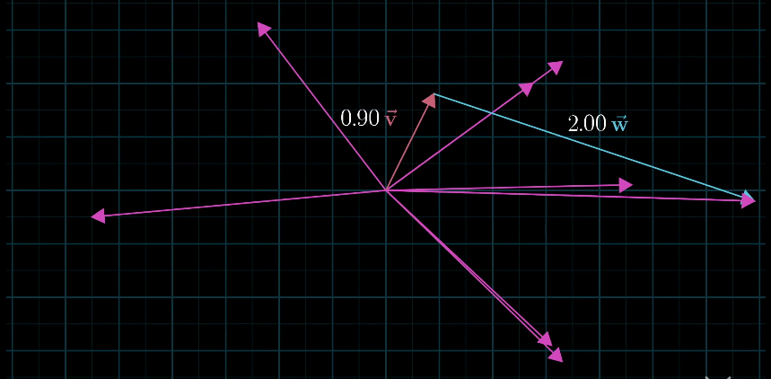如果选择的 2 个向量，恰好共线的话，那它们的线性组合就被局限在一条过原点的直线上了。

向量 v, w 的 全部线性组合 所构成的向量集合称为向量 v, w 所 张成的空间。张成的空间，实际上就是通过加法和数乘这两种运算，能获得的所有可能的向量集合是什么。
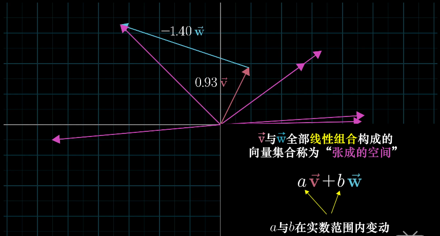2.3 线性相关与线性无关¶
将线性组合的想法扩展到 3 维空间中。想象 3 个 3 维向量，它们所张成的空间会是什么样的呢？这取决于我们选择的 3 个向量。
- 通常情况下，我们会得到整个 3 维空间
- 当选择的 3 个向量共面时，它们所张成的空间是一个过原点的平面
- 当 3 个向量共线时，它们所张成的空间是一条过原点的直线
- 当 3 个向量都是零向量时，它们所张成的空间只包含零向量
显然，在考虑向量所张成的空间时，有些向量是多余的。例如，情况 b ，确定一个平面只需要 2 个向量，而我们却用了 3 个向量，这意味着，有 1 个向量是多余的；情况 c，确定一条直线只需要 1 个向量就够了，而我们用了 3 个向量，其中有 2 个向量是多余的。数学上，我们用线性相关来描述这样的现象。
当我们说几个向量所构成的向量组 线性相关 时，意思是向量组中的（任意）一个向量都可以用向量组中其他向量的线性组合来表示出来。换句话讲，这个向量已经落在其他向量所张成的空间中，它对整个向量组张成的空间是没有贡献的，把它从向量组中拿掉，并不会影响向量组所张成的空间。
线性无关 指的是，向量组中的（任意）一个向量无法用向量组中其他向量的线性组合表示出来。换句话说，向量组中的每一个向量都为向量组所张成的空间贡献了一个维度，每一个向量都缺一不可，少了任何一个向量，都会改变向量组所张成的空间。
3. 矩阵与线性变换¶
3.1 线性变换¶
首先来理解线性变换。变换，本质就是函数。在微积分中，我们了解了函数描述了一种映射关系，输入内容，输出唯一与其对应的结果。在线性代数中，我们输入一个向量，输出另一个向量。
之所以用“变换”这个术语，其实暗示了我们能够以某种方式可视化 输入—-输出 关系，暗示我们要从运动的角度去理解这一过程。变换让向量从一个地方（对应输入向量），运动到了另一个地方（对应输出向量）。
如果用空间中的点来表示向量，则可以把变换可视化为下图这样：
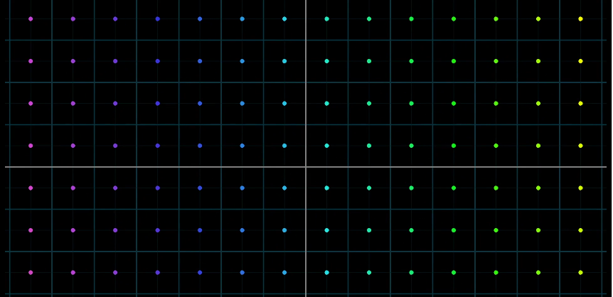经过变换后，所有点运动到了新的位置：

如果用等间距的平行网格来表示向量，则可以把变换可视化为下图这样：

经过变换后，网格变成了这样：

那么线性变换是什么意思呢？如果一个变换同时具有以下 2 条性质，则它是一个线性变换。
- 变换前后，所有的直线仍然是直线
- 变换前后，原点保持不变

放在二维直角坐标系这一特定场景下，具体的体现就是施加线性变换后，整个坐标系的原点不变，并使网络线保持平行且等距分布。

那么，我们要如何用数学语言描述一个线性变换呢？答案很简单，我们只需要知道变化前后的两个基向量i 和 j 的位置。
以平面直接坐标系为例，假定我们有一个向量 v = [-1,2] ,由上一节可知，我们可以将它看成是 2 个基向量 i, j 的线性组合 v = -1i + 2j。
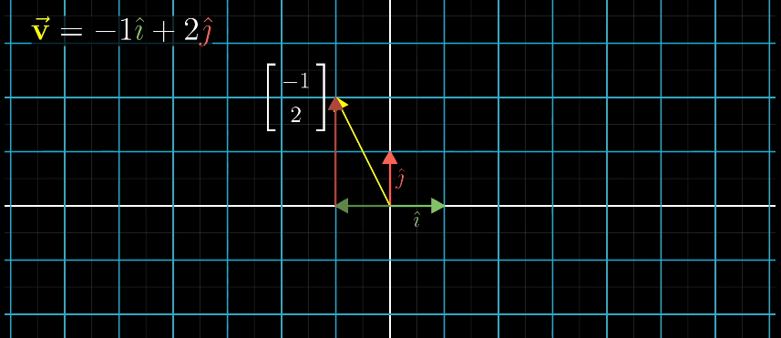在某个线性变换的作用下，i, j 以及 v 都运动到了新的位置。
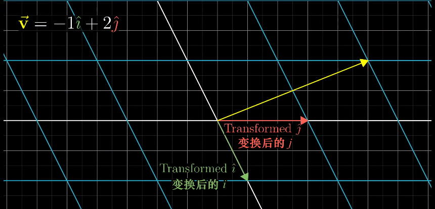线性变换前后网络线保持平行且等距分布，这一性质有一个重要的推论：线性变换后的 v 仍然是变换后的 i 和 j 的线性组合，并且线性组合的系数和变换前一样（仍然是 -1 和 2）。

本例子中，变换后的基向量 i 和 j 分别是 [1,-2] 和 [3,0]。由此，我们可以轻松计算出变换后的v 的坐标是 [5,2]。
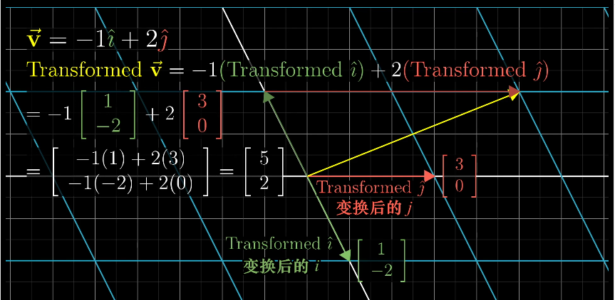事实上，我们只要知道线性变换之后的基向量 i, j 的位置（坐标），就可以计算出任意一个向量经过同样的线性变换之后的位置（坐标）。

这意味着，对于一个线性变换，我们只需要跟踪基向量在变换前后的变化，就可以掌握整个空间（即全部向量）的变化。我们将线性变换后的基向量坐标按列组合起来，可以拼接成一个矩阵。线性变换的全部信息便都包含在这个矩阵当中了。
对于二维空间的线性变换，用一个 2×2 的矩阵就可以完全确定。这个矩阵的 2 列 表示 2 个转换后的基向量的坐标，如下图所示。
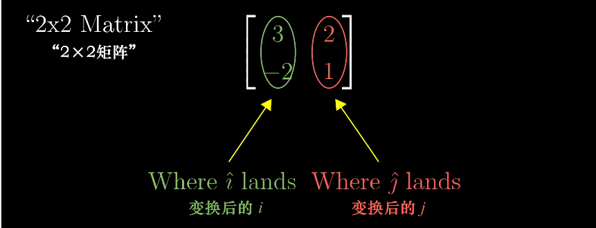那么，任何向量经过该线性变换之后，其新坐标的计算方法都是这样。记住，所有的变换都只是简单的“对基向量缩放再相加”。

通过这种方式，是否可以更轻松的理解矩阵与向量的乘法？我们可以把矩阵的每一列看作变换后的基向量，它描述了一种特定的线性变换，而矩阵与向量的相乘，就是将这个线性变换作用于给定向量。
简而言之，选定基之后， 向量刻画对象，矩阵刻画对象的运动，用矩阵与向量的乘法施加运动；矩阵的本质是运动的描述。 一旦理解了这点，线性代数之后的各个主题，包括矩阵乘法、基变换、特征值等都会非常直观易懂。
4. 矩阵乘法¶
上一节中我们提到，矩阵表示了一种线性变换。有些时候我们会进行多次线性变换，比如先旋转再剪切，但无论经过多少次，最后的总体作用还是一个线性变换，这样的变换可以看做是由多个独立变换组合成的复合变换。
那么如何描述这类复合变换呢？一样道理。麻烦的方法是，我们把多个线性变换拆开分别看，例如下图，对向量先施加一个旋转变换，再施加一个剪切变换，注意矩阵是往左侧不断叠加的：
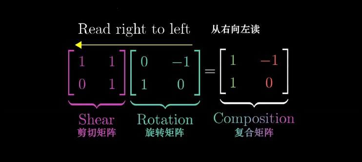表示的就是对给定的向量先进行旋转，再进行剪切。但无论中间过程是什么，最后的结果都应该和复合变换的结果完全相同。复合矩阵反应的是旋转+剪切的总体效应。从这个角度来说，新的这个矩阵（复合矩阵）可以看做最初两个矩阵的积。

关键点到了。很多人对矩阵的乘法计算只知道死记硬背，但一旦理解了矩阵相乘内在的几何意义（即两个线性变换的相继作用），那么矩阵相乘就是手到擒来的事。
首先，需要记住一点，矩阵的相乘应该从右往左读，即先应用靠右边的变换，再依次向左。以下图的为例，假设我们的原始基向量是 i 和 j，经过矩阵 M1 和 M2 的作用后会变成怎样的新基向量呢？
可以看到，j 经过 M1 的作用后变成了 [-2,0]， [-2,0]再经过 M2 的转换变成了 [0,-2]，因此新的基向量 j 就是 [0,-2]，也就是复合矩阵的第二列。和矩阵乘以向量的机制完全一样。
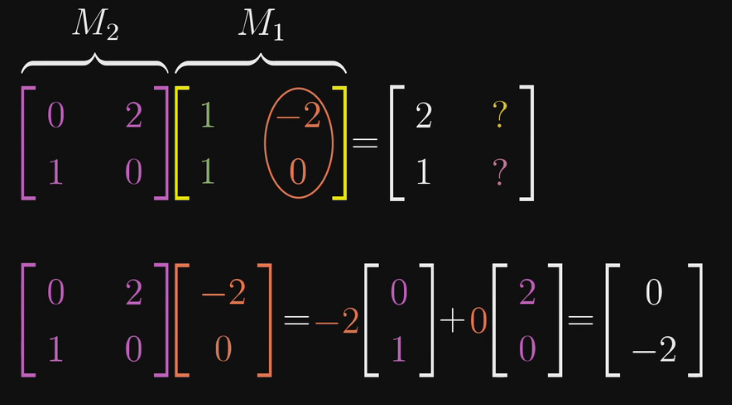推广到任意矩阵，就得到了我们在教科书中常见的矩阵乘法公式：
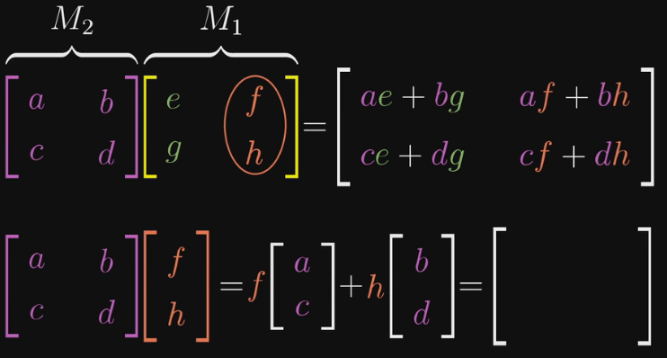如此，把矩阵乘法理解为 连续的几次线性变换 ，我们也能很容易理解，矩阵 A*B 的结果和矩阵 B*A 的结果是不一样的，因为操作顺序的不同，产生的影响也不同。比如，先对 i 和 j 基向量先往x轴方向拉伸一倍，再顺时针旋转90度，与先旋转90度再拉伸，结果肯定不一样。
同样，我们也能轻易的理解矩阵乘法的结合律为什么合理了。你当然可以通过数学的方法证明等式左右两边的计算结果一致，但当你明白矩阵乘法实际的意义是相继的进行线性变换后，那么答案简直不言自明—— (AB)C 与 A(BC) 做的完全就是同一件事：先进行C变换，再进行B变换，最后进行A变换，根本不需要证明什么。

5. 行列式¶
之前通过网格线可视化线性变换的图片中我们可以看到，线性变换中有些将空间向外拉伸，有些将空间向内挤压，有件事对理解这些变换很有用，就是测量线性变换具体对空间产生了多少拉伸或压缩，换句话说，就是测量一个给定区域面积扩大或减小的比例。
以下图为例，假设我们的新基向量是[3,0] 和 [0,2]，经过变换后，原先 1*1 的单位正方形区域的面积变成了 3*2 = 6 即原来的6倍。
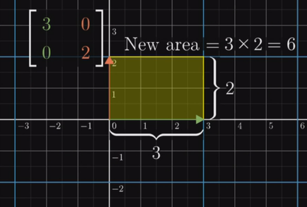实际上，我们只需要观察这个单位正方形变换后的面积变化比例，就等于知道了其他任意区域的面积变化比例，因为对于其他任意的方块来说都会有相同的变化，这是由线性变换产生网格线保持平行且等距分布这一特性推断出的。而这个变化的比例，就是我们常说的行列式。
如果说一个线性变换的行列式是3，那就是说它将一个区域的面积变化为原先的3倍。
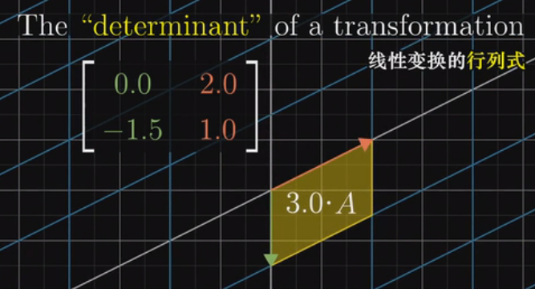如果一个线性变换的行列式为0，则说明它将原来的二维平面压缩到了一条线（甚至一个点）上，此时所有区域的面积都为0。换句话说，探究一个矩阵的行列式是否为0，就能了解这个矩阵对应的线性变换是否将空间压缩到了更低维度（例如从二维降维到一维空间）。
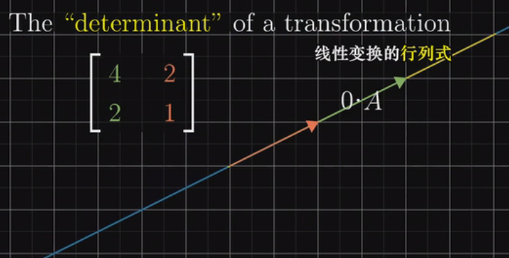行列式还可能是负值。从几何意义上如何理解将面积变化为原来的负数倍呢？如果将二维空间想象成一张白纸，那么这个变换相当于将纸张翻转到了另一面。这类变换改变了空间的定向。因此，负值表示空间翻转了，但行列式的绝对值仍然表示区域面积的缩放比例。
放到三维空间中，行列式的意义依然相同，告诉我们单位体积（即1*1*1的立方体）在变换后的缩放比例。当行列式为0时，这个立方体降维成了一个平面或一条直线，甚至一个点。
行列式的计算
二维矩阵的行列式计算公式很简单，但下图可以帮我们理解为什么是这样。 ad - bc 的结果就是黄色平行四边形的面积，也就是相对于单位正方形变化的比例。
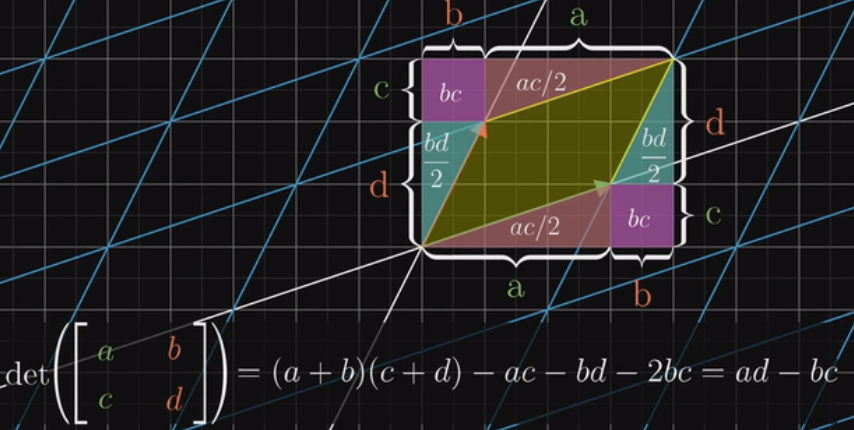然而就我个人而言，这些计算完全可以由电脑完成，死记硬背行列式的计算公式、甚至三阶、四阶行列式的公式并无太大意义，理解背后的意义和原因才更重要。这也是很多人觉得学习线性代数痛苦的原因，国内的大部分课本只会让你沉浸于各种奇怪的计算数学符号中，却根本无法让你知道为什么会是这样。比如下面这个定理：

两个矩阵相乘的行列式，等于矩阵各自行列式的乘积。
如果用数值的方法证明，大概可以写5张A4纸。但如果你明白了行列式的本质，那又是不言自明：左边的等式代表先进行 M2 矩阵代表的线性变换再执行 M1 所代表的线性变换之后，面积或者体积所变化的比例。右边的式子是两个线性变换使面积或体积变化的比例的乘积。因为两边线性变换之后的结果是一样的（执行顺序一样），所以比例肯定也是一样的
6. 逆矩阵、秩、列空间与零空间¶
6.1 逆矩阵¶
前面章节中，我们通过线性变换理解矩阵与向量的运算，这一章我们仍然用线性变换来理解逆矩阵、列空间与零空间这三大概念。Again，个人以为理解这些概念的意义比会计算重要的多，因此计算方法，例如高斯消元法、行阶梯形等不会在这里介绍。
我们都知道，矩阵的一大用途的帮助我们解方程组，比如，我们可以将一个方程组写为以下线性方程组的形式：

这里，矩阵代表了某个线性变换，所以从几何意义上理解，求解该方程组的未知量 x,y,z 等同于寻找一个向量 x， 使得它在经过 A 的变换后与向量 v 重合。
我们来看一个二元方程组：

这个方程组 Ax = v 的解依赖于矩阵 A 所代表的变换，是将原始空间挤压到一个更低维空间，还是保持不变，即 A 的行列式是否是0.
如果行列式不为0，即空间的维度不变，那么只可能有一个向量在变换后与 v 重合，可以通过对 v 做逆变换来得到 x 向量。这里对 v 的逆变换就对应了另一个线性变换，也称为 A 的逆。例如，如果 A 变换是顺时针旋转90度，那么 A 的逆就是逆时针旋转90度。简单的说，如果先施加 A 变换，再施加 A 的逆，那么又回到原始状态。
当我们通过计算机得到 A 的逆后，向量 x 也就迎刃而解了，在等式两边同左乘 A 的逆即可。其几何意义对应于对 v 进行逆向的变换，还原为 x。
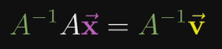如果行列式为0，矩阵 A 所代表的变换将空间压缩到了更低的维度上，此时没有逆变换，直观的理解就是我们没有办法将一个低维空间的东西变换到高维空间（比如把一条直线还原到一个平面），因为高维的空间包含更多的信息，压缩成低维后那些信息都已经丢失了，不可能恢复那些丢失的信息。
行列式为0时，方程式的解可能也存在，就要看变换后的向量 v 是否在变换后的空间内，如果不在，就无解，如果在，就有无数解。
在很多教科书上，你会读到这样一段解释： 方程组 Ax = v 有解当且仅当 v 是 A 的各列的线性组合 。细心体会一下，这与我们上一段说的其实是一回事。
除了用行列式为0来描述矩阵变换后的结果，我们还可以更精确的描述变换后空间的维数，这里就引入了一个新的概念：秩。
6.2 矩阵的秩¶
秩 就代表了变换后空间的维数。如果变换后所有的向量都落在一条直线上，那么这个变换的秩为1；如果变换后所有的向量都落在一个二维空间上，那么这个变换的秩为2。
对于一个 2*2 的矩阵来说，它的秩最大只能为2，因为它的2个基向量最多张成二维空间。对于 3*3 的矩阵，它变换后的结果可能为一个一维、二维或三维空间。
更正式的定义：一个矩阵 A 的列秩是 A 的线性无关的列的极大数目。类似地，行秩是 A 的线性无关的行的极大数目。矩阵的列秩和行秩总是相等的，因此它们可以简单地称作矩阵 A 的秩。
7. 非方阵¶
之前我们讨论的矩阵都是方阵，例如用 2*2 的矩阵表示二维向量到二维向量的变换。那么如何理解非方阵呢？很简单，仍然是线性变换，但是是从某个维度转换为另一个维度的坐标。
以一个 3*2 的矩阵为例，它的几何意义是将输入的二维空间映射到三围空间上。 矩阵有2列表示输入空间有2个基向量（因此是二维输入空间），有3行表示每一个基向量在变换后用3个独立的坐标来描述。
8. 点积与对偶性¶
向量点积的标准求法
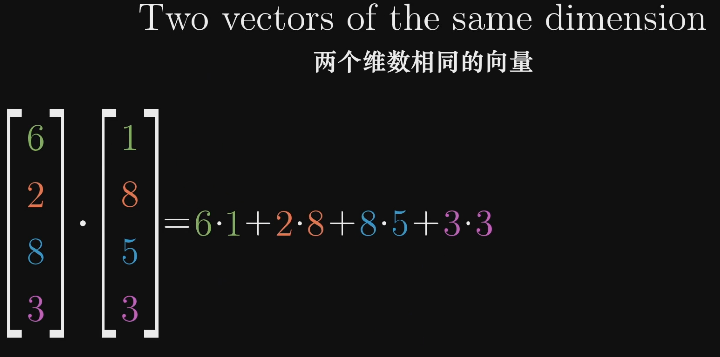从几何角度理解，向量之间的点积就是其中一个向量在另一个向量上的投影长度，乘以另一个向量的长度。

很显然的，如果两个向量方向垂直，点积的结果为0.如果方向相反，点积的结果为负值。当方向完全一致时，点积的值最大。
为什么这两者是相等的？
首先，我们有一个从二维空间到数轴的线性变换，假设我们并不知道什么向量的点积运算定义，而只是将空间上的点投影到数轴上。

因为这个变换是线性的，所以必然可以用一个1行2列的矩阵描述。这个矩阵 [ux uy] 即变换后的基向量 i 和 j 的坐标，也就是基向量在新数轴上的投影。
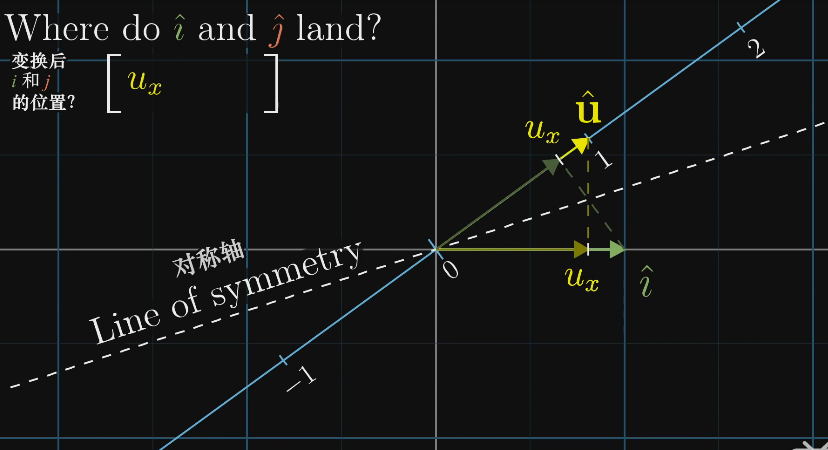而又因为1*2矩阵与一个二维向量相乘的过程，和将这个矩阵转置过来，与向量做点积的过程相同，所以这个投影的变换必定与某个二维向量有关。

由此我们得到结论，任何时候一个线性变换，如果输出空间是一维的数轴，不管这个变换是如何定义的，空间都会存在一个唯一的向量与这个变换相关，施加该线性变换和做点积效果是一样的。换句话说，两个向量的点积，就是将其中一个向量转换为线性变换，施加在另一个向量上。
这是数学中对偶性的一个体现。一个向量的对偶，是它定义的线性变换。一个多维空间到一维空间的线性变换的对偶，就是多维空间中的某个特定向量。
9. 叉积¶
两个二维向量的叉积的大小，等于这两个向量构成的平行四边形的面积。同时，这个面积也是有正负号的，如果向量 v 叉积 w，v 在 w 的左侧，则面积为负。


要计算叉积的值，就要用到之前行列式的概念。记得行列式表示的是线性变换后单位区域的面积缩放的比例，在这里就相当于我们要计算的平行四边形的面积，因为这个平行四边形就来源于面积为1的单位正方形。
两个三维向量的叉积，结果是一个新的三维向量。这个向量必然与原来两个向量确定的平面垂直，并且其长度与这两个向量张成的平行四边形的面积相同。
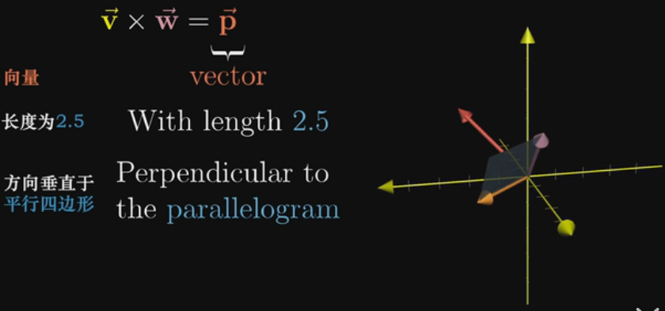10. 基变换¶
在直角坐标系中，任何一个向量（点的坐标）都可以看做是对**基向量 i 和 j 缩放的标量**。将这两个经过缩放的基向量相加就是坐标要描述的向量。
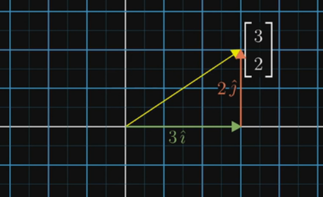这个视角下，任何一个向量的第一个数字可以看成是（从原点）向右的运动，第二个数字是向上的运动，而这个事实取决于与我们选择的基向量 i [1,0] 和 j[0,1]，因为这两个向量是我们进行缩放的对象。那么如果我们使用不同的基向量会怎么样？
假设现在我们有了另一套基向量 b1 和 b2，在我们的原始坐标系中，我们用 [2,1] 来描述 b1，[-1,1]来描述 b2.
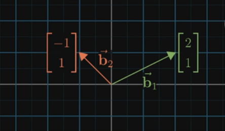于是，虽然我们关注的是空间中的同一个向量，但在原坐标系中它是[3,2]，在新的坐标系中就是另一个表达了（不过记住，无论是什么坐标系，原点是同一个）。这就好比两种语言描述同一个事物。
那么如何在不同的坐标系之间互相转化呢？
先看如何把新坐标系中向量的坐标转换为老坐标系。很简单，用新坐标系中的向量的坐标，数乘用老坐标系表达的新基向量，就得到了在老坐标系中向量的对应表达（黄色向量）。
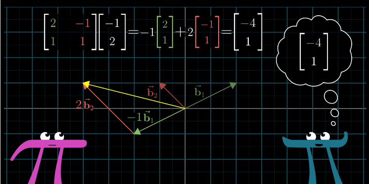注意，这就是一个矩阵与向量的乘法。我们之前已经从几何上理解了，矩阵向量乘法相当于对向量做了一个特定的线性变换，这里也可以同样的方法去理解。这个由新坐标系中的基向量构成的矩阵可以看成是一个线性变换，它将老坐标系中的基向量 i 和 j 转换成新基向量 [2,1] [-1,1].
同理，已知老坐标系中向量的坐标，如何知道它在新坐标系中的坐标呢？很简单，逆向变换一下，用老坐标系中向量的坐标，乘以新的基向量构成的矩阵的逆就行了。
用两张图总结一下不同坐标系之间的相互转化：
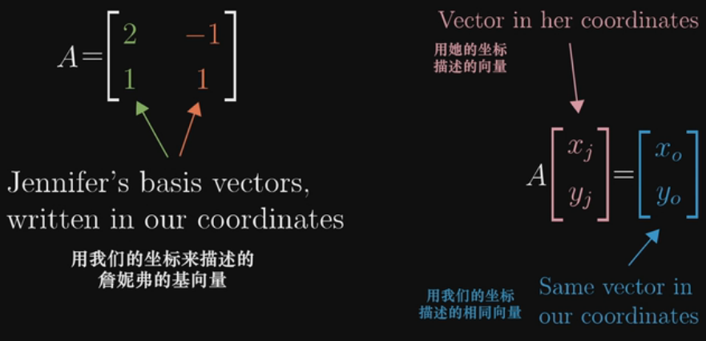 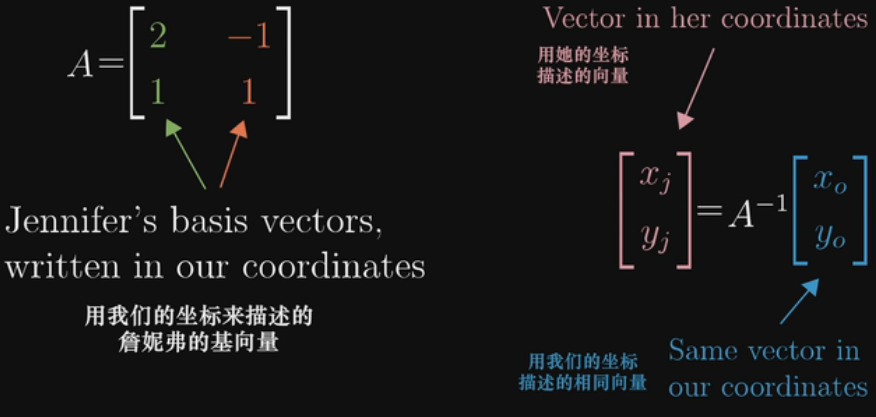上面我们讲了如何在不同坐标系上表达同一个向量，那么如何用类似的道理来描述不同坐标系上的同一个线性变换（矩阵）呢？例如，我们知道在老坐标系中，逆时针90度的旋转可以用矩阵：
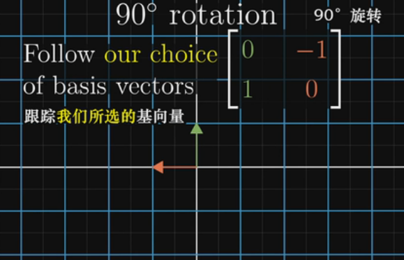来表示。注意，我们的原始基向量 i[1,0] 和 j[0,1] 经过90度旋转后变成了 [0,1] 和 [-1,0], 组合在一起就变成了我们的变换矩阵。那么如何在新坐标系中描述这个变换呢？
首先从新坐标系的任一向量出发，例如 [-1,2]。
然后，对其施加基变换，即乘以新的基向量构成的矩阵。这时得到了该向量在老坐标系中的表达。
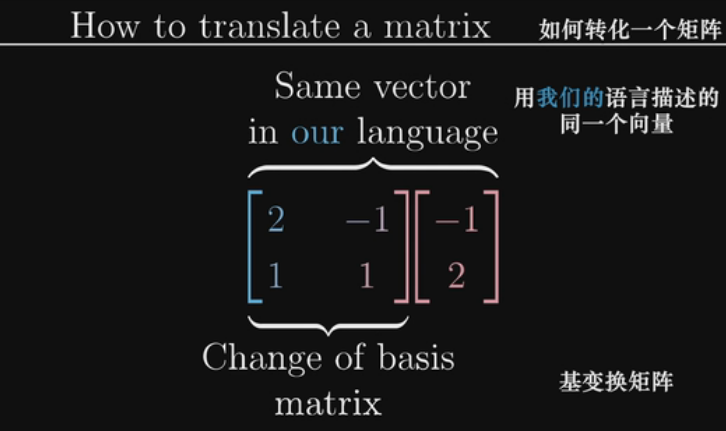接着，把结果左乘我们老坐标系下的线性变换矩阵，这时就得到了变换后的向量，不过是用老的坐标系描述的。
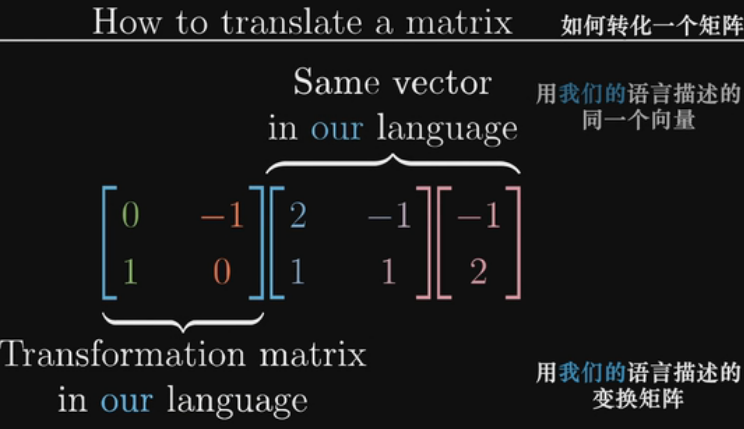最后，左乘新基向量变换矩阵的的逆，大功告成！它接收任何用新坐标系描述的向量，输出用新坐标系描述的变换后的向量。
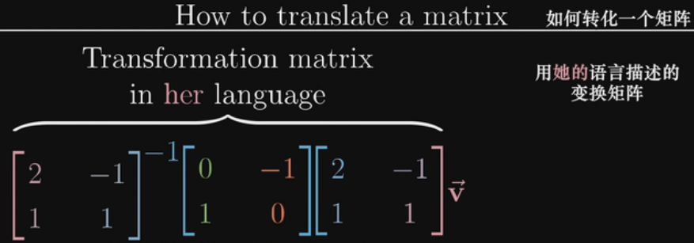总的来说，每当我们遇到这样一个式子 \(A^{-1} MA\) 的时候，这就暗示着一种数学上的转移作用，中间的矩阵代表着一种所见的变换，另外两个矩阵代表着转移作用，也就是视角(坐标系基)的变化，矩阵的乘积还是代表着同一种变换，只不过是从其他人的视角来看的。
11. 特征向量与特征值¶
11.1 特征向量与特征值¶
对于矩阵向量乘积，有两种情况：大多数情况下,向量经过线性变换后离开了其所张成的空间（该向量所在直线所有向量的集合），但是一些特殊的向量留在他们张成的空间中。意味着**矩阵对它的作用仅仅是拉伸或者压缩**，矩阵对于该向量的乘法作用只相当于一个标量。用数学的语言说，就是这样：

以下图中的变换矩阵为例，基向量 i 在该矩阵的变换作用后，仅仅是沿着x轴方向拉伸了3倍，而 i 张成的空间是x轴，因此向量 i 经过线性变换后仍然留在其张成的空间中。此外，x轴上的任意向量也和 i 一样，只是拉伸为了原来的3倍。
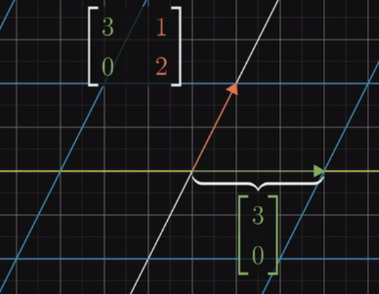这些特殊的向量就叫做特征向量，伸缩变换的比例叫做特征值。注意，特征值可以有正有负。
二维线性变换矩阵不一定有特征向量，例如旋转90度就没有，因为每个向量都发生了旋转离开了它张成的空间。
11.2 特征基¶
在有了特征向量和特征值的概念之后，如果基向量恰好是特征向量的话，对应的变换矩阵将会是一个对角矩阵，对角元是他们所属的特征值，每一列都可以看做是一个基向量。对角矩阵的好处是和自己相乘的结果更容易计算。例如，下图的计算结果，就是每个基向量与其对应特征值的100次幂相乘。
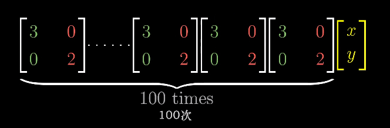11.3 矩阵的对角化¶
如果变换有足够的特征向量来张成初始矩阵的列向量所张成的空间的话，那么就可以变换坐标系，使这些特征向量就是基向量。在上一节已经讲到可以通过 \(A^{-1} MA\) 这种形式将相同的线性变换转移到另一个视角，对角化就是转移到特征基的视角。矩阵A是特征向量组成的矩阵。
例如，我们已经知道变换矩阵

对应的两个特征向量是 [1,0] [-1,1]，那么经过

的变换，产生的新矩阵必然是对角矩阵，对角元对应特征值。从而。要计算上述变换矩阵的100次幂，可以先将它转换到特征基，在那个新坐标系中计算100次幂（非常容易计算），然后再转换回老的坐标系中。
12. 抽象的向量空间¶
我们再来回顾下什么是向量？是一个有方向的箭头，亦或是有序的列表？还是这两种观点是更深层次抽象事物的体现？
可以先讨论一个新的事物——函数，某种意义上函数也是一种向量，例如两个函数f(x)和g(x)，可以将两个函数相加可以得到新函数(f+g)(x),这和向量对应坐标的相加类似,只不过某种程度来说，函数有无数多个坐标要相加。类似的，对于函数与另一个数相乘(2f)(x)=2f(x)，也和向量对应坐标的数乘类似。
因此，以空间箭头为背景考虑的线性代数的概念和解决问题的手段也可以应用于函数。例如对函数的线性变换。那么怎么理解一个函数的变换是线性的呢？满足以下两条性质即可。

例如，对函数求导就是线性运算，因为它满足以上两条性质。两个函数相加再求导数，与分别求导数再相加的结果一致。乘法也一样。
矩阵求导
如果用矩阵来描述求导，该如何做？以多项式函数为例，我们可以把每一项的系数作为向量，把x的多次项作为基函数（基向量），而因为多项式的次数可以任意高，所以基函数集合也是无穷大的。因此，把一个多项式函数表达为矩阵就像下面这样：

对一个多项式函数求导，就能表达成下面这样：

所以，函数求导和矩阵向量乘法这两件事，看似毫无关联，其实完全可以理解成同一件事。实际上，线性代数中关于向量的很多概念，在应用于函数时有直接的类比。

所以，其实数学中有很多类似向量的事物，只要处理的对象集有数乘和相加的概念，无论是箭头、数组还是函数，线性代数中所有关于向量、线性变换和其它的概念都适用它。这些类似向量的事物，箭头也好函数也好，它们构成的集合叫做“向量空间”。

上边的八项规则成为公理。是建立一系列向量加法和数乘必须遵守的规则。因此如果要让所有建立好的理论和概念适用于一个向量空间，那么它必须满足上述的公理。
向量的具体形式并不重要，只要它们相加和数乘的概念遵守向量加法和数乘的八项规则，它就是向量。
References
| [1] | Introduction to Linear Algebra 5th Edition, Gilbert Strang |
| [2] | Essense of Linear Algebra, 3Blue1Brown, 双语视频 https://www.bilibili.com/video/av6731067 |